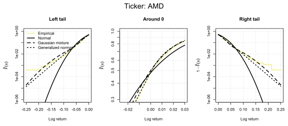
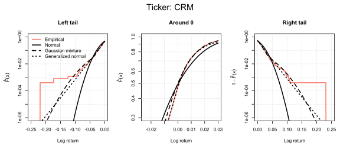
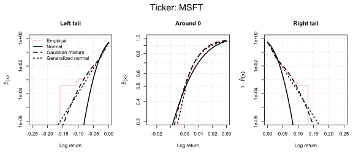
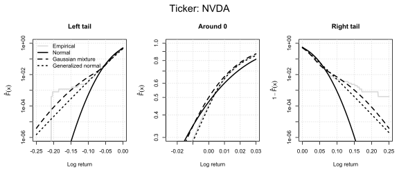
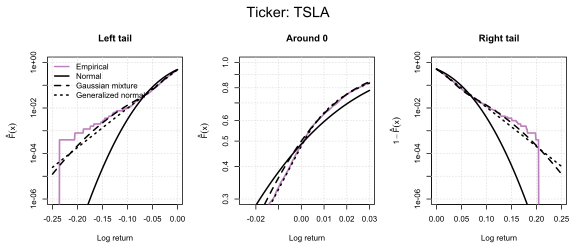

Modeling Stock Returns with Maximum Likelihood Estimation
Motivation
It is a fairly common practice in quantitative finance to assume that stock returns are normally distributed, for example in the Markowitz model. However, it is usually hard to get a good Gaussian fit for the empirical return distribution. I decided to investigate this issue by performing statistical analysis of daily log-returns for 10 large U.S. companies over a 10-year period.
I tested three candidate distributions:
- The typical two-parameter normal distribution:
\[ \mathcal{N}(\mu, \sigma^2), \quad f(x) = \frac{1}{\sqrt{2\pi\sigma^2}} \exp\left(-\frac{(x-\mu)^2}{2\sigma^2}\right). \]
- Two component Gaussian mixture:
\[ f(x) = p \cdot \mathcal{N}(0, \sigma^2) + (1-p) \cdot \mathcal{N}(0, \beta^2), \]
which is a two-state market model, i.e. the stock prices have higher or lower volatility with probabilities p and 1-p, respectively.
- Generalized Gaussian distribution (GGD):
\[ f(x) = \frac{\alpha}{2 \beta \, \Gamma(1/\alpha)} \exp\left(-\left|\frac{x-\mu}{\beta}\right|^{\alpha}\right), \]
which is a three-parameter extension of the normal distribution.
Data
- Daily share prices for 10 large U.S. technology companies
- Sample period: 2015–2025
- Data source: Yahoo Finance (downloaded using the
yfinancePython package) - Log-returns calculated from close prices
Methods
Evaluation of the empirical distribution with plots and moment estimation.
Implementation of Maximum Likelihood Estimation (MLE) method in R.
Estimation of parameters for Model 1, 2, and 3.
Likelihood ratio (LR) statistical tests to assess:
- if the mean parameter differs significantly from 0 in Model 1 and 3
- if the mixed Gaussian model is an improvement compared to the normal model
- if the generalized Gaussian model is an improvement compared to the normal model
Maximum Likelihood Estimation results
Below you can review the probability density fits for the 10 chosen companies.
To further verify the fit performance, especially in the tails of the distributions, we can look at the P-P plots shown below. They visualize the alignment of the empirical and fitted CDF values. The closer the points are to the diagonal line, the better the fit.









Conclusion
The normal distribution provides a poor fit to the empirical return distribution. Is is especially visible in the tails, where it significantly underestimates the distribution (see the P-P plots).
The Gaussian mixture model captured the distribution’s tails substantially better. Its problem is underestimation of probability in the central section around 0.
The GGD modelled the empirical distribution very well in all cases. It also provided accurate alignment in the tails, which suggests that log-returns, while having heavier tails than the normal distribution, belong to the subexponential family.
A question arises whether the good fit of the GGD is due to its flexibility and higher number of parameters, or if it is a genuinely better model. Three arguments can be made:
For all companies, two of the parameter estimates are similar (\(\beta \approx 1.0\), \(\alpha \approx 0.015\)), which suggests that the GGD is not overfitting to the sample, but rather captures a general property of stock returns.
The likelihood ratio tests strongly suggest that both the mixture and generalized Gaussian models provide statistically significant improvements compared to the normal distribution.
The GGD model provides a more detailed specification of the data: in this model, the hypothesis of mean log-return being 0 is rejected for 8 out of 10 companies, while in the normal model it is rejected for 5 companies (or less, for \(\alpha <0.05\)). This suggests that the GGD captures the distribution more accurately, including the mean parameter, which is important for many applications.
Key Takeaways
For the selected companies, the normal distribution is not a good choice for modeling log-returns, as it fails to capture the empirical distribution, especially in the tails.
The Gaussian mixture model improves the fit in the tails, but the most accurate model is the generalized Gaussian distribution, with \(\beta \approx 1.0\) and \(\alpha \approx 0.015\) and \(\mu\) of order 0.001.
P-values of the Likelihood Ratio Tests
\(H_0\): \(\mu = 0\) in Model 1 (normal distribution)
| AAPL | AMD | AMZN | CRM | GOOGL | INTC | META | MSFT | NVDA | TSLA |
|---|---|---|---|---|---|---|---|---|---|
| 0.0108 | 0.0152 | 0.0541 | 0.4093 | 0.0222 | 0.5821 | 0.1863 | 0.0160 | 0.0007 | 0.1072 |
\(H_0\): \(\mu = 0\) in Model 3 (generalized Gaussian distribution)
| AAPL | AMD | AMZN | CRM | GOOGL | INTC | META | MSFT | NVDA | TSLA |
|---|---|---|---|---|---|---|---|---|---|
| 0.0002 | 0.1127 | 0.0003 | 0.0076 | 0.0000 | 0.0991 | 0.0131 | 0.0001 | 0.0000 | 0.0471 |
\(H_0\): Model 2 (mixture) does not improve fit compared to Model 1 (normal) (implemented as \(\beta = \sigma\) restriction):
| AAPL | AMD | AMZN | CRM | GOOGL | INTC | META | MSFT | NVDA | TSLA |
|---|---|---|---|---|---|---|---|---|---|
| 0.0000 | 0.0000 | 0.0000 | 0.0000 | 0.0000 | 0.0000 | 0.0000 | 0.0000 | 0.0000 | 0.0000 |
\(H_0\): Model 3 (generalized) does not improve fit compared to Model 1 (normal) (implemented as \(\beta = 2\) restriction):
| AAPL | AMD | AMZN | CRM | GOOGL | INTC | META | MSFT | NVDA | TSLA |
|---|---|---|---|---|---|---|---|---|---|
| 0.0000 | 0.0000 | 0.0000 | 0.0000 | 0.0000 | 0.0000 | 0.0000 | 0.0000 | 0.0000 | 0.0000 |